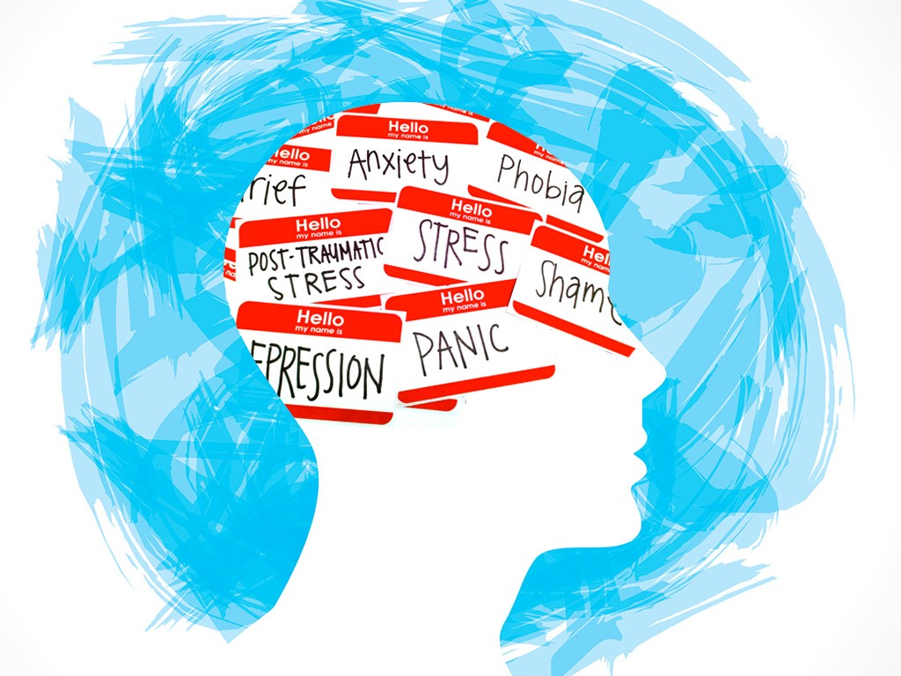

Mental Illness Real Time
October 2, 2020 by Krizanna Squire
 Mental health includes our emotional, psychological, and social well-being. It affects how we think, feel, and act. It also helps determine how we handle stress, relate to others, and make choices. Mental health is important at every stage of life, from childhood and adolescence through adulthood.Any people have mental health concerns from time to time.
Mental illness does not discriminate; it can affect anyone regardless of your age, gender, geography, income, social status, race/ethnicity, religion/spirituality, sexual orientation, background or other aspect of cultural identity. While mental illness can occur at any age, three-fourths of all mental illness begins by age 24.
___________________________________________________________________________________________________________
How To Handle Stress
October 2, 2020 by Krizanna Squire
 Stress is the body's reaction to any change that requires an adjustment or response. The body reacts to these changes with physical, mental, and emotional responses. Stress is a normal part of life. You can experience stress from your environment, your body, and your thoughts. Even positive life changes such as a promotion, a mortgage, or the birth of a child produce stress.
Stress is the body's reaction to any change that requires an adjustment or response. The body reacts to these changes with physical, mental, and emotional responses. Stress is a normal part of life. You can experience stress from your environment, your body, and your thoughts. Even positive life changes such as a promotion, a mortgage, or the birth of a child produce stress.
Stress can also help you rise to meet challenges. It’s what keeps you on your toes during a presentation at work, sharpens your concentration when you’re attempting the game-winning free throw, or drives you to study for an exam when you’d rather be watching TV. But beyond a certain point, stress stops being helpful and starts causing major damage to your health, mood, productivity, relationships, and your quality of life.